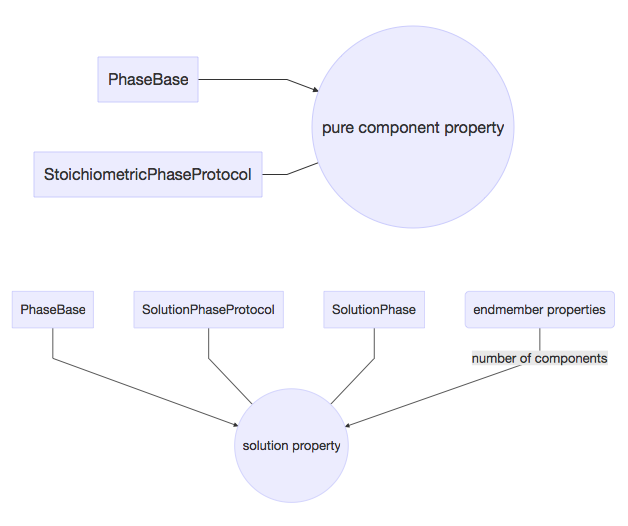
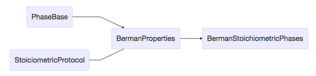

Phase classes¶
Support classes for all phases¶
PhaseBase - The base class for all stoichiometric and solution phases
SolutionPhase
SolutionPhaseProtocol - Methods implemented by all multicomponent (solution) phases
StoichiometricPhaseProtocol - Methods implemented by all endmember (stoichiometric) phases
Class hierarchy and protocol implementation for pure endmember (stoichiometric) phases

Berman endmember properties¶
BermanStoichiometricPhases
Class hierarchy and protocol implementation for multicomponent (solution) phases

MELTS phases¶
KalsiliteSSBerman
LiquidMeltsH2O
LiquidpMeltsH2O
MeliliteBerman
Metals
NephelineSSBerman
DEW- and HKF-based solutions¶
DEWmodelParameters
FluidDuan
ZhangAndDuanCorrectionTerms
Stixrude and Lithgow-Bertelloni phases¶
StixrudeSolutions
StixrudeStoichiometricPhases
Protocol and category extensions for parameter calibration¶
See the example Jupyter notebooks for implementation details.